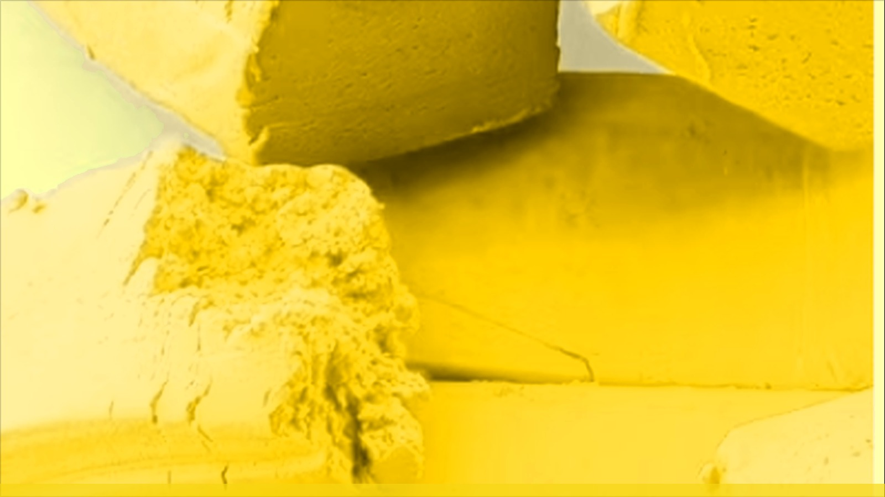
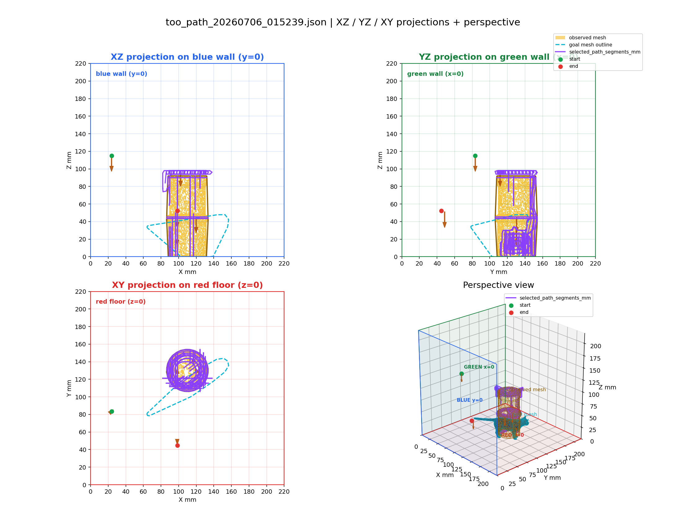
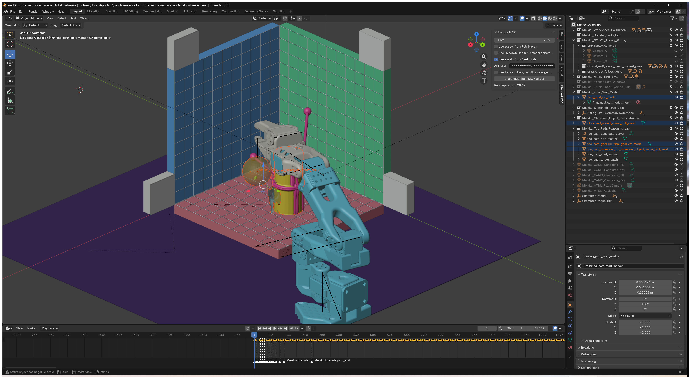

MEIKKU
A constructive cooperative toy for playing with a robot arm — no paths to program, no code.


Playing with a robot arm should not require programming one. Meikku is a constructive cooperative toy: talk, watch the arm respond, and keep playing — no waypoints, no code.
Open the Black Box
Behind the constructive cooperative toy, this page marks the actual implementation stack: Blender IK, live clay extraction, and imported tool paths baked into timeline keyframes.


1Blender IK drives the mechanical arm model.
2Webcam + depth cam extract the clay proxy.
3Imported tool path is baked as keyframes.